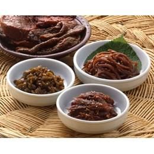

장아찌는 오이, 무, 마늘 따위의 채소를 간장이나 소금물에 담가 놓거나 된장, 고추장에 박았다가 조금씩 꺼내 양념하여서 오래 두고 먹는 음식이다. 「농가월령가(農家月令歌)」에서 농촌 부녀자들이 하던 연중행사 중에 음식에 관계되는 것을 찾아보면 다음과 같은 것이 있다. 여기서도 장아찌 등의 저장식품이 일상식에서 중요하였음을 보여주고 있다.7월령에는 “채소 과일 흔할 적에 저축을 많이 하소. 박·호박고지 켜고 외·가지 짜게 절여 겨울에 먹어보소. 귀물이 아니 될까.”
장아찌 중 순창 명진 고추장 의 장아찌가 명물이라고 한다. 